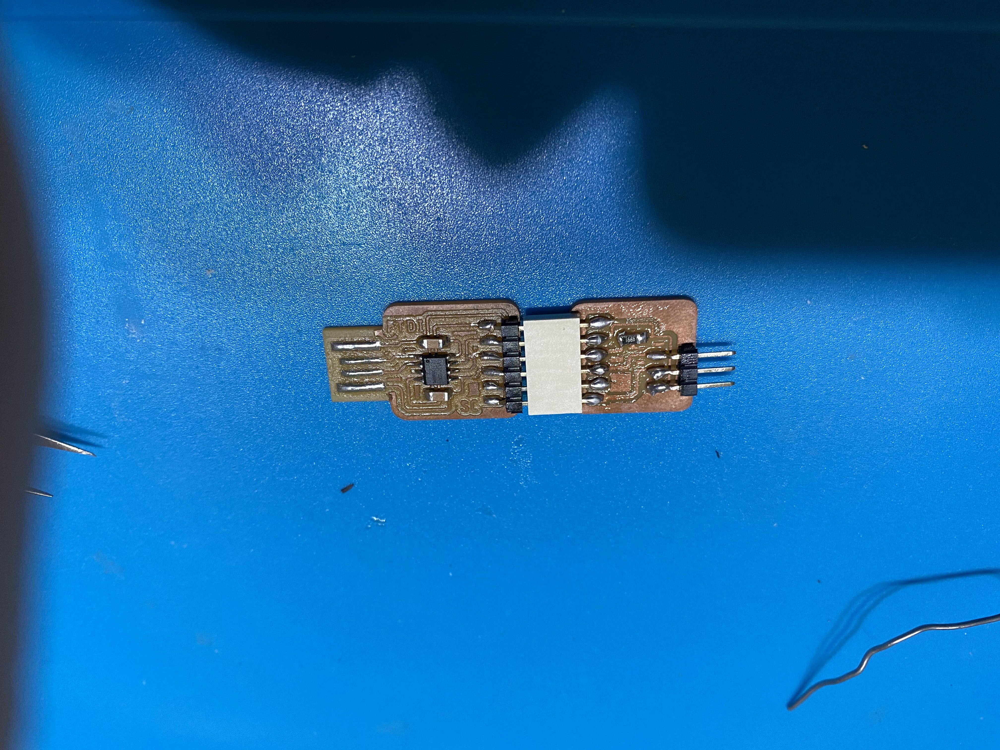

PCB Manufacturingw
"Typically, debugging via the serial monitor and burning the bootloader requires 2 connectors: FTDI and UPDI (like the ICSP connector for the Atmega328 and others) These connectors, however, take up a lot of space on the pcb, especially with respect to the fact that the ATtiny devices, such as the ATtiny3217, are very small. That is why a combined FTDI / UPDI connector would help take less space on the pcb." -Sauce
For the first two board, we made a FTDI to UPDI programmer.
 FTDI example
FTDI example
 FTDI Wiring on EAGLE
FTDI Wiring on EAGLE
 UPDI example
UPDI example
Using the png files provided, we loaded it into mods to obtain a Gcode file.
 Open mods and right click : menu/ programs/ open server program/ mill 2D png.
Open mods and right click : menu/ programs/ open server program/ mill 2D png.
Then, "select PNG file on the left"
Afterwards, under 'Mill Raster 2D', click calculate, and the Gcode will be generated.
After that, we uploaded the gcode file into the computer on the CNC Router.


Then, we set the X and Y coordinate to 0 on our prefered start location, and set the Z to 0 using the "Zeroing Tappy Tappy" (a micro switch with a zeroing sensor).
During the routing process, the adjustment of the Z axis is favourable when it is undercutting or overcutting, so increasing or decresing the Z offset will yield better cuts.

Final product of the ftdi

Final UPDI + FTDI


This Fusion 360 Eagle, the software we used to design and wire the circuit and map out the schmetics.

This is the schmatics of the hello board made.
It has a LED (Light Emitting Diode) and a DPDT push button, controlled by an ATtiny 412 Microcontroller.
After that, I have used the auto route function to route the wiring and rearrange manually to achive 100% wiring.

Then, the Png file is generated and I put it in mods.


"If the solder is applied properly, it should like Mt Fuji type, rather than Ice Cream"
For the soldering, my 'Hello Board' had connectivity issues with the Arduino application. After troubleshooting done by Mr Stevens, the board was found to have its chip and LED shorted, thus rendering those component broken.
I have opted to do most of the soldering at home, which yield few issues.
Firstly, my soldering iron tip was hotswapable, and I have opted to use a fat pointed tip iron head, which could not properlly apply the solder between pins. This resulted in many messy residue which may have resulted in the shorting of the chip.